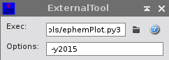
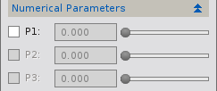
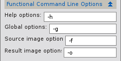
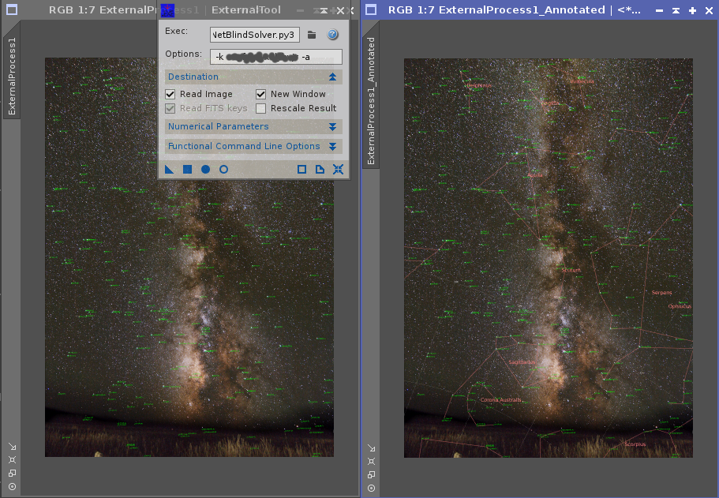
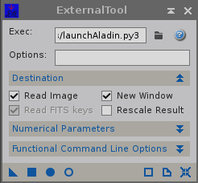

1 Description
[hide]

The astronomical community provides a lot of free and/or open source tools that can solve tasks difficult to solve with PixInsight alone. The ExternalTool module enables PixInsight to use many of these tools as if they were part of PixInsight. The only requirement is that they can be called via a command line, and that they can read and write FITS files. Instances of ExternalTool can be used on full images or previews, as part of process flows, applied with process containers, stored on a workspace, file or project, or used with PJSR - just as with any regular PixInsight process. For suitable external tools, even Realtime Previews can be generated.
In its basic operation, ExternalTool
- stores the target image to a file, including its FITS keywords and ICC profile,
- calls an executable with user defined parameters, plus the filename of the input file and an output file name,
- monitors execution, displaying any messages on the Process Console Window, and
- on termination, it checks for the exit code and if necessary display an error message. If successful, it replaces the target image with the result image, truncating its values if necessary and transfering FITS keywords and ICC profile from the result file into PixInsight.
Compared to other solutions, such as using the ! Process Console command, or the PJSR ExternalProcess object, the ExternalTool process provides GUI, ease of use, and the full integration that only PCL modules can provide.
The tool comes with a number of example tools, allowing to compute intensity contours, call the Aladin interactive sky atlas, plot a visibility calender of the major planets, or use the astronomy.net Blind Solver web service to platesolve images.
2 Usage
[hide]
This chapter discusses the use of ExternalTool, its GUI elements, example scripts, and development of your own tools.
2.1 GUI
2.1.1 Select Executable
The user selects an external executable using the Exec selection dialog. Hitting the "?" button will display a help message on the Process Console for executables that support the -h command line option.
The Options line allows the user to specify options that should be passed to the tool with any command line. In the screenshot, we pass the year argument to the ephemPlot.py3 executable.
2.1.2 Trigger Execution
Execution is triggered using the New Instance, Apply, Apply Global or Realtime Preview buttons at the lower border of the dialog, just as with any other PixInsight PCL process:
- New Instance, Apply: The target file is written to a temporary file, and the temporary file name is passed to the executable using the -f fileName command line option. The result is expected in a file given by the -o fileName option. The result file is read and displayed when the executable terminates.
- GlobalApply: The operation is the same as with (local) apply, but no input file is provided to the executable. The executable is also given the -g option to indicate global operation. The result is displayed in a new image window.
- Realtime Preview: On any change of parameters, the executable is called with the current image and the current parameters, and the result is displayed in the Realtime Preview window.
2.1.3 Source Image and Result
By default, External Tool will write the target image to a FITS file, including its FITS keywords and ICC profile. It cannot do this if the target image does not have a main view.
By default, the process will read the result FITS file and display it. If the result is read into a main view (i.e. not a preview or Realtime preview) or a new image window, also the FITS keywords and the ICC profile are read with the image. Otherwise they are ignored and a warning is printed on the Process Console. (For those interested: FITS keywords and ICC profile belong to an Image Window, not to the individual views. It therefore would have unexpected side effects to read FITS keys when ExternalTool is applied to a Preview.)
The default processing of the result can be modified using the Destination dialog section:
- Read Image: If not selected, do not pass an -o option to the external executable, and do not read in any result image. This option is useful if the external executable does not produce an image file.
- New Window: If selected, the result is read into a newly created window instead of the default target window. This is useful with (local) applies that should not modify the target image, but instead produce a new image from the data.
- Read FITS keys: if selected, read FITS keys and ICC profile from the result image (if possible, see disucssion above). Otherwise always ignore the FITS keys and ICC profile in the result file.
- Rescale Result: By default, the pixel values in the result file are truncated to the maximum range available in PI (i.e. [0,1] for real data, [0,max(uintX)] for integer data of bitlengthX.). With truncation, if the pixel values are within this range, no values change. When selected, the read data is always rescaled to the maximum value range, thus preserving the full dynamic range, but also changing the values.
2.1.4 Numerical Parameters
It is possible to pass 0..3 numerical parameters in range [0,1] to the external executable, defined by sliders in the Numerical Parameters section. The parameters are simply appended to the command line passed to the external tool.
2.1.5 Finetuning Options
ExternalTool uses a number of command line options to signal source image, target image and mode of operation to the external executable. The default option names are displayed in the screenshot. While it is recommended that your external executable understands those default options, or that a wrappper program translates them to options understood by the external program, it is possible to modify the defaults to accommodate other conventions. The options are:
- Help Options: This string is added to the command line if the user hits the "?" button on the Exec options line. The executable is expected to output information about its use to the terminal. Default is -h.
- Global Options: Added to the command line to indicate a Global Apply. Default -g.
- Source Image Options: Added to the command line to indicate that the next parameter is the input file. Default is -f. The resulting command line is something like -f inputFile.fit.
- Result Image Options: Added to the command line to indicate that the result is expected to be written to a file with the following name. Default is -o. A typical command line contains thus something like -o outFile.fit.
2.2 Usage Hints
- Use the FITSHeader tool to transfer FITS keys between different images.
- Because this tool relies on external executables, it has limited control over what these tools do. Handle with care!
- If something goes wrong during the execution of the external executable, ExternalTool can only clean up files it knows about, and report the error. To find the cause of error, carefully study the output on stdOut and stdErr that is copied to the Process Console.
2.3 Examples
ExternalTool comes with a set of example tools that you may find useful. They were all written in Python3 because it is the author's favorite scripting language, and it comes with number of libraries very useful for astronomy. But it is entirely possible to create such tools in any other programming language.
2.3.1 Prerequisites
The tools rely on a number of other tools and libraries. To use them, you need to install them on your system.
For Windows, all Python related tools are open source. The easiest way to install Python2, Python3 and add on libraries is to use the free Anaconda distribution available on http://continuum.io/downloads. Install the 64-bit distributions of Python 2.7.x and Python 3.4.x.
For Linux/FreeBDS, you can also use the Anaconda distribution, or you rely on the packages that come with your Linux system.
For MacOS, Anaconda is also an option, but I dont have any experience with it.
The following tools are needed by the examples. Note that the package names may differ on your system:
Tool |
Examples |
Remark |
Fedora21 package |
|---|---|---|---|
Python3 |
all *.py3 |
all examples have been written in this scripting language. Version >=3.4 is required. |
python3 |
Python2 |
astrometryDotNetBlindSolver.py3 |
needed for astrometry.net client astrometryDotNetClient.py2 used by the blind solver. Version >=2.6 is required. |
python |
numpy |
all *.py3 |
numerical processing of arrays (=images). |
python3-numpy |
matplotlib |
all *.py3 |
plot graphs, save as .png |
python3-matplotlib |
astropy |
all *.py3 |
handling of FITS files and more |
python3-astropy |
ephem |
ephemPlot.py3 |
compute positions of planets. This package is not available in precompiled form on Fedora21. To install on Fedora21, first install python3-devel using the yum package manager, then use the Python package manager to install ephem with pip3 install ephem. Installation for other Linux distributions may work differently. |
- |
Aladin |
launchAladin.py3 |
Aladin is an interactive sky atlas. Download and install from http://aladin.u-strasbg.fr/. The script expects the executable in $PATH or $HOME/Aladin/Aladin. |
- |
2.3.2 genContours

The genContours.py3 tool generates contour lines within an existing image, and displays them along with a legend and image coordinates. It has been designed to show the Realtime Preview capabilites of ExternalTool, and the ability to specify numerical parameters using the sliders in the Numerical Parameters section. As it always needs a source image, it does not support Global Apply.
2.3.3 ephemPlot

The ephemPlot.py3 tool creates a visibility diagram of planets and moon for a whole year. Options allow to specify the year, location, diagram title and other details. Press the help button to learn more. If applied to an image (local Apply), the dimensions of the diagram are taken from the image, its contents is ignored. On global apply, a large diagram suitable for printing is generated.
2.3.4 astrometryDotNetBlindSolver
The astrometryDotNetBlindSolver.py3 tool uses the Astrometry.net web service to do a blind platesolve of your image. As it always needs a source image, it does not support Global Apply.
To use Astrometry.net, you need an API key that can be generated by registering with the service. See http://nova.astrometry.net/api_help for details. You need to specify the key with the -k option (something like -k yourapikey123).
The blind solver works amazingly well, but it also fails in some cases. If it does, you should always try with an image version that has a different (less aggressive) histogram transform. Note that the image is transfered as a PNG file to Astrometry.net: a number of bright stars should still be visible after saving in this format.
Use option -a to add basic annotations to your image. In this case, the result image is always a 8 bit deep RGB image. If you like, you can use the FITSHeader tool to transfer the solution to the original image. If you do not use option -a, the solver transfers the solution into the original image without changing the image format.
The solutions and annotations created by the blind solver are not as exact and sophisticated as those produced by ImageSolver and AnnotateImage. You may want to use these tools to improve on what you get from the blind solver. The screenshot above shows the blind solver annotation on the left, and the one of the AnnotationScript using the blind solver solution on the right.
Note: Internally, astrometryDotNetBlindSolver.py3 uses the Python2 script astrometryDotNetClient.py2. This script is not intended for use with ExternalTool.
2.3.5 launchAladin
Aladin in an interactive sky atlas that permits to query many astronomical databases, analyze the data, and overlay existing images with information from astronomical databases. The launcher opens Aladin on the target image. If no target image is given but PI expects a result (Global Apply), it opens on an empty image and loads whatever you save into this file as the result.

The screenshot shows M74, plate solved with the blind solver. The picture has been annotated with the object types as retrieved from the SIMBAD database.
FIXME I have not yet managed to tell Aladin on how to save the view as a FITS file. Can you help?
2.4 Use from Process Console or PJSR
ExternalTool can also be used in other contexts.
In the Procssing Console, it can be called as ExternalTool. For details, use help ExternalTool.
In PJSR, ExternalTool can be used as the ExternalTool object. Basic use:
var P = new ExternalTool; P.sBinPath = "ephemPlot.py3"; // path to executable. This needs to be an absolute path, or it need // to be locatable by PATH. P.sOptions = "-y 2015"; // user defined options as specified in the GUI below the sBinPath. Always // added to the command line. P.sGlobalOptions = "-g"; // added to command line on global apply. P.sHelpOptions = "-h"; // added to command line if help button is pressed. P.sSourceOptions = "-f"; // -f <inFileName> is used to identify the input file. Only given on // (local) Apply. P.sResultOptions = "-o"; // -o <outFileName> is used to identify the output file. Given on Apply, // Global Apply, Realtime Preview unless bReadImage is false. P.bReadImage = true; // if false, no result image is expected, and -o is not added to the // command line P.bReadFitsKeys = true; // if true, FITS keys and ICC profile are read into a suitable view. // Otherwise they are always ignored. P.bNewWindow = false; // if true, read result into newly created image window. Implied // by Global Apply P.bRescaleResult = false; // if true, pixel values are rescaled to the PI range, in particular // [0,1] for real typed results. Otherwise, they are truncated if necessary. P.bParam1 = false; // defines if dParam1 is used. If used, it is appended to the command line P.bParam2 = false; // dito for dParam2 P.bParam3 = false; // dito for dParam3 P.dParam1 = 0.000; // see bParam1 P.dParam2 = 0.000; // see bParam2 P.dParam3 = 0.000; // see bParam3 /* * Read-only properties. They are filled on termination of the process: * P.nExitCode = 0; // Exit code of executable. 0 means success, any other value indicates a problem P.sStdOut = ""; // copy of the text written to stdOut by the executable. P.sStdErr = ""; // copy of the text written to stdErr by the executable. */
2.5 Adding Tools
Adding tools that are called by ExternalTool can be done in any compiled or scripting programming language that can produce an executable, i.e. C, C++, Fortran, Python, Java, Perl, ... . The fact that all the examples currently provided are written in Python is only due to the fact that this is the author's favorite scripting language. When creating your own tools, consider the following hints:
- The prerequisites for using your tool with ExternalTool are:
- The tool can be controlled by command line: You need to be able to tell your tool everything it needs for its operation by giving it command line options. This may exclude some heavily GUI oriented tools.
- It can read and write FITS files: This is the only image format currently supported by ExternalTool. If your tool does not read or write images, you may still be able to use it with the options described in Source Image and Result.
- The only communication between PI and the tool executable is via command line and image files. There is no way to make call backs from the tool to PixInsigght or vice versa.
- If there is already a tool that does what you want, you may be able to directly use it by tweaking the options in FineTuning options or by directly specifying everything needed in the Options line. A better idea however may be to write a small wrapper that translates between the command line created by ExternalTool and the one expected by the other program. This can often be done with some rather basic shell or Python scripts, see the launchAladin example.
- The external program may be terminated by PixInsight. Clean up if necessary.
- Using the variables as defined for PJSR in Other Uses, the command line sent to the external tool is the following:
- if help button is pressed: sBinPath sOptions sHelpOptions
- otherwise: sBinBath [sGlobalOptions] [sResultOptions <resultFileName>] [sSourceOptions <inputFileName>] sOptions [dParam1 [dParam2 [dParam3]]]
- The example executables discussed in Examples may be a good starting point for your, especially if you know Python.
- If you need more information about the exact operation of ExternalTool: it is open source, and can be found the the PCL source distribution.
Copyright © 2015 Georg Viehoever